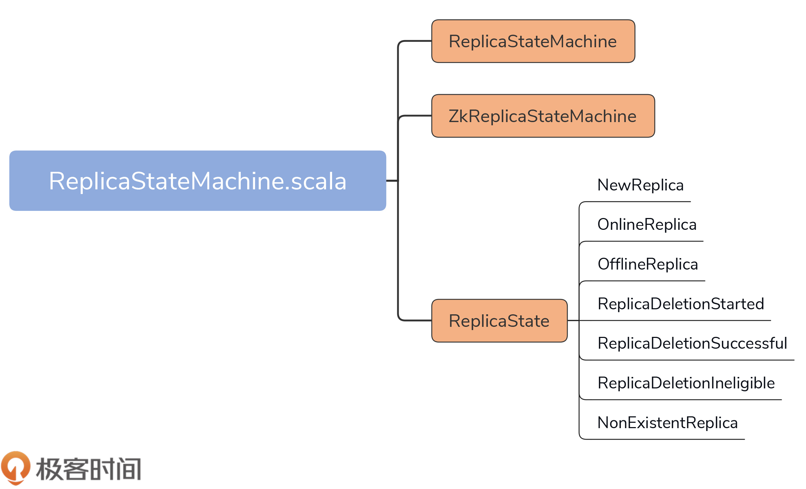
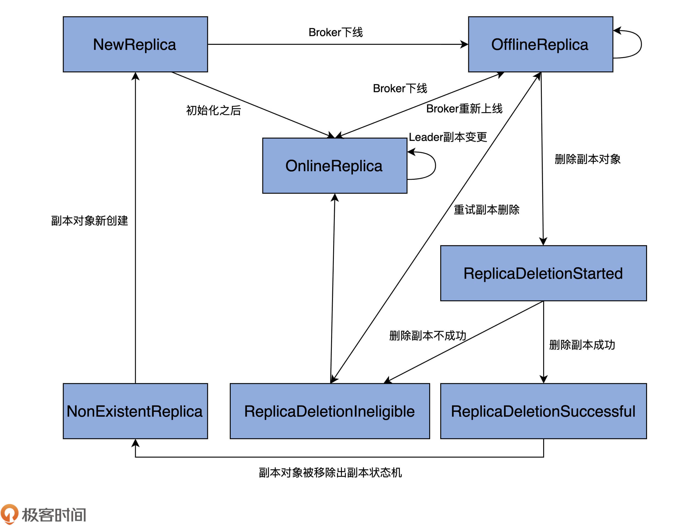
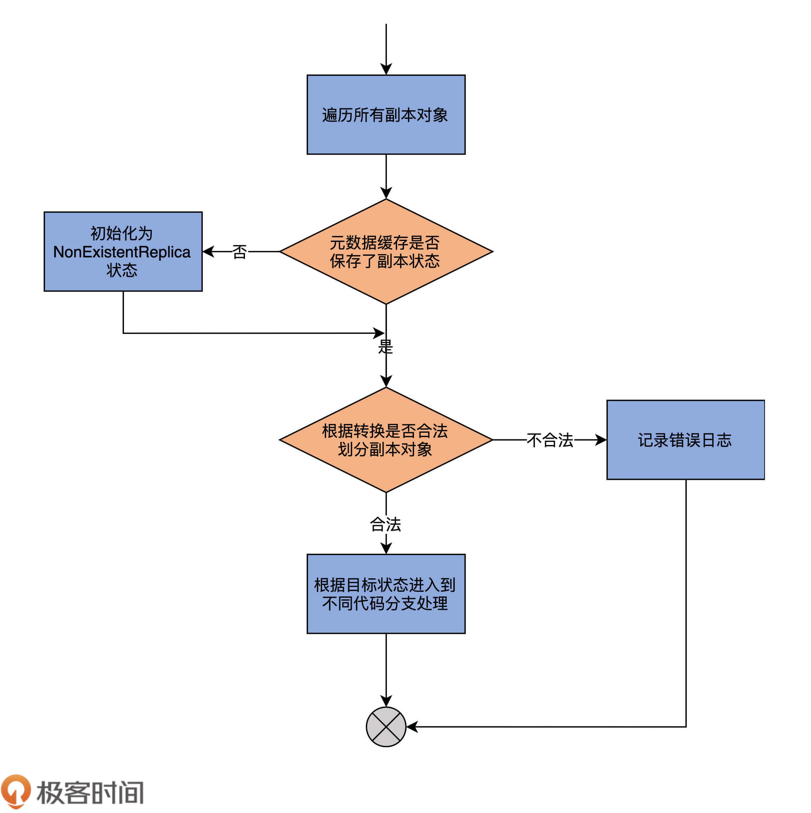
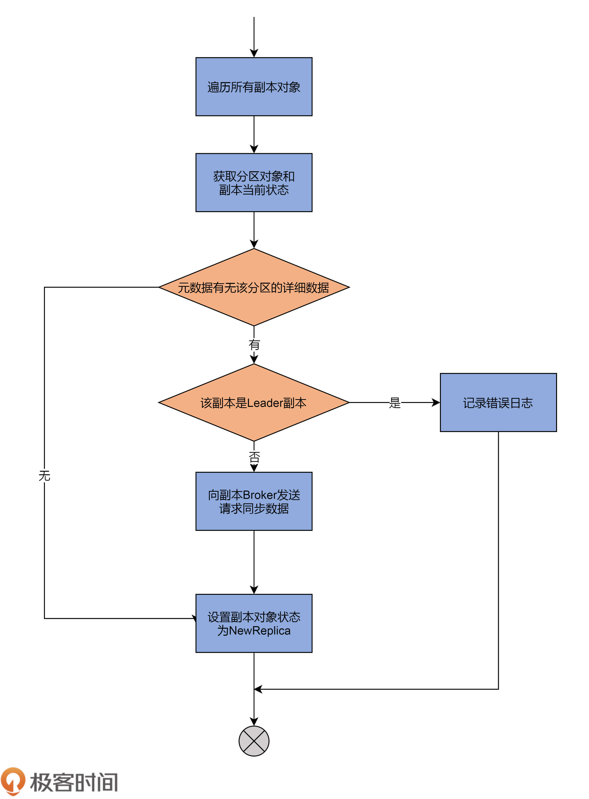
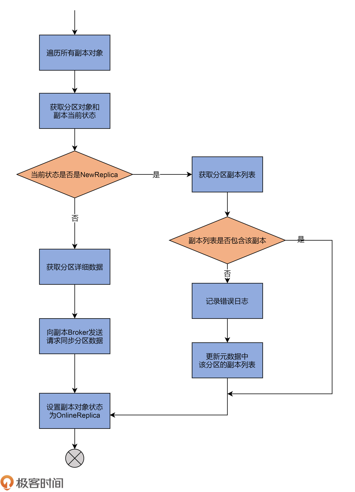
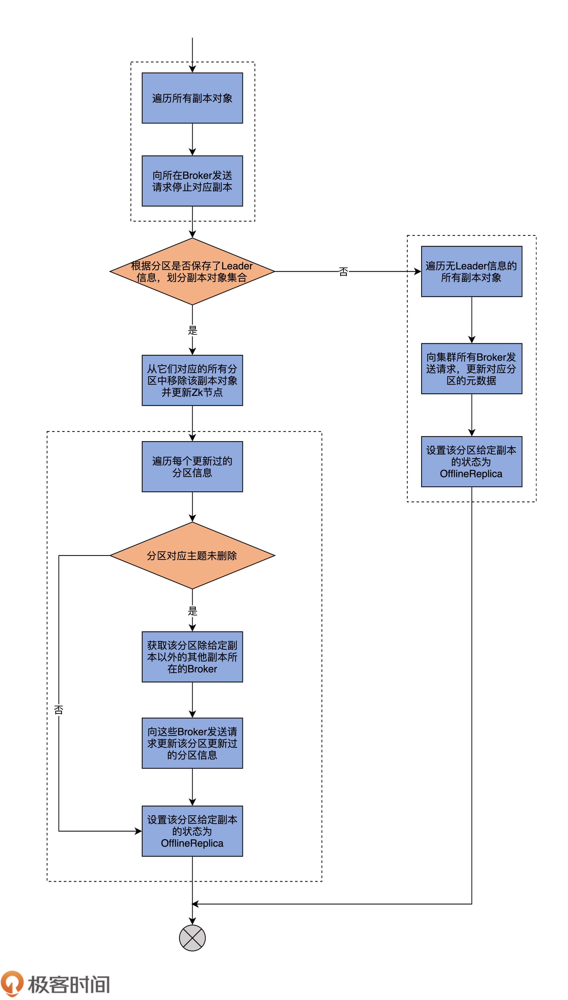
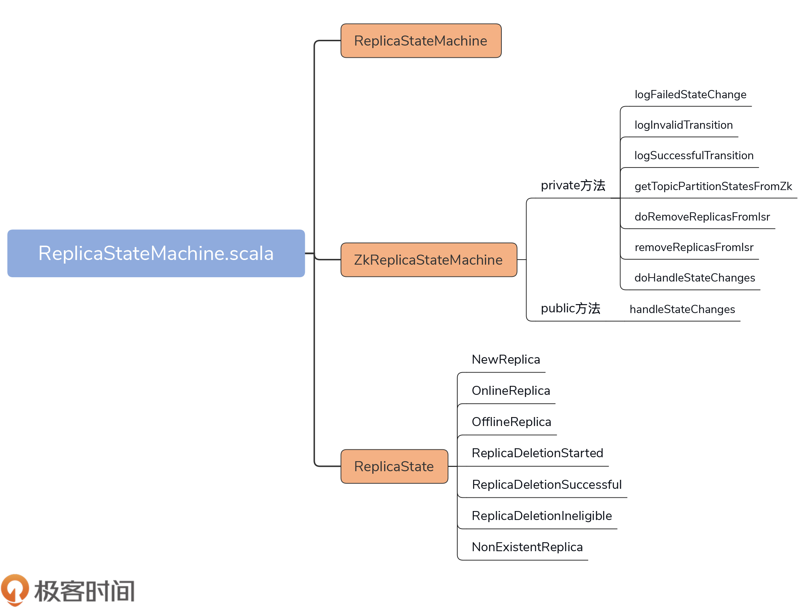

- 00 导读 构建Kafka工程和源码阅读环境、Scala语言热身.md.html
- 00 开篇词 阅读源码，逐渐成了职业进阶道路上的“必选项”.md.html
- 00 重磅加餐 带你快速入门Scala语言.md.html
- 01 日志段：保存消息文件的对象是怎么实现的？.md.html
- 02 日志（上）：日志究竟是如何加载日志段的？.md.html
- 03 日志（下）：彻底搞懂Log对象的常见操作.md.html
- 04 索引（上）：改进的二分查找算法在Kafka索引的应用.md.html
- 05 索引（下）：位移索引和时间戳索引的区别是什么？.md.html
- 06 请求通道：如何实现Kafka请求队列？.md.html
- 07 SocketServer（上）：Kafka到底是怎么应用NIO实现网络通信的？.md.html
- 08 SocketServer（中）：请求还要区分优先级？.md.html
- 09 SocketServer（下）：请求处理全流程源码分析.md.html
- 10 KafkaApis：Kafka最重要的源码入口，没有之一.md.html
- 11 Controller元数据：Controller都保存有哪些东西？有几种状态？.md.html
- 12 ControllerChannelManager：Controller如何管理请求发送？.md.html
- 13 ControllerEventManager：变身单线程后的Controller如何处理事件？.md.html
- 14 Controller选举是怎么实现的？.md.html
- 15 如何理解Controller在Kafka集群中的作用？.md.html
- 16 TopicDeletionManager： Topic是怎么被删除的？.md.html
- 17 ReplicaStateMachine：揭秘副本状态机实现原理.md.html
- 18 PartitionStateMachine：分区状态转换如何实现？.md.html
- 19 TimingWheel：探究Kafka定时器背后的高效时间轮算法.md.html
- 20 DelayedOperation：Broker是怎么延时处理请求的？.md.html
- 21 AbstractFetcherThread：拉取消息分几步？.md.html
- 22 ReplicaFetcherThread：Follower如何拉取Leader消息？.md.html
- 23 ReplicaManager（上）：必须要掌握的副本管理类定义和核心字段.md.html
- 24 ReplicaManager（中）：副本管理器是如何读写副本的？.md.html
- 25 ReplicaManager（下）：副本管理器是如何管理副本的？.md.html
- 26 MetadataCache：Broker是怎么异步更新元数据缓存的？.md.html
- 27 消费者组元数据（上）：消费者组都有哪些元数据？.md.html
- 28 消费者组元数据（下）：Kafka如何管理这些元数据？.md.html
- 29 GroupMetadataManager：组元数据管理器是个什么东西？.md.html
- 30 GroupMetadataManager：位移主题保存的只是位移吗？.md.html
- 31 GroupMetadataManager：查询位移时，不用读取位移主题？.md.html
- 32 GroupCoordinator：在Rebalance中，Coordinator如何处理成员入组？.md.html
- 33 GroupCoordinator：在Rebalance中，如何进行组同步？.md.html
- 特别放送（一）经典的Kafka学习资料有哪些？.md.html
- 特别放送（三）我是怎么度过日常一天的？.md.html
- 特别放送（二）一篇文章带你了解参与开源社区的全部流程.md.html
- 特别放送（五） Kafka 社区的重磅功能：移除 ZooKeeper 依赖.md.html
- 特别放送（四）20道经典的Kafka面试题详解.md.html
- 结束语 源码学习，我们才刚上路呢.md.html
- 捐赠
17 ReplicaStateMachine：揭秘副本状态机实现原理
你好，我是胡夕。今天我们讲副本状态机。
前几节课，在讲Controller、TopicDeletionManager时，我反复提到副本状态机和分区状态机这两个组件。现在，你应该知道了，它们分别管理着Kafka集群中所有副本和分区的状态转换，但是，你知道副本和分区到底都有哪些状态吗？
带着这个问题，我们用两节课的时间，重点学习下这两个组件的源码。我们先从副本状态机（ReplicaStateMachine）开始。
课前导读
坦率地说，ReplicaStateMachine不如前面的组件有名气，Kafka官网文档中甚至没有任何关于它的描述，可见，它是一个内部组件，一般用户感觉不到它的存在。因此，很多人都会有这样的错觉：既然它是外部不可见的组件，那就没有必要学习它的实现代码了。
其实不然。弄明白副本状态机的原理，对于我们从根本上定位很多数据不一致问题是有帮助的。下面，我跟你分享一个我的真实经历。
曾经，我们部署过一个3-Broker的Kafka集群，版本是2.0.0。假设这3个Broker是A、B和C，我们在这3个Broker上创建了一个单分区、双副本的主题。
当时，我们发现了一个奇怪的现象：如果两个副本分别位于A和B，而Controller在C上，那么，当关闭A、B之后，ZooKeeper中会显示该主题的Leader是-1，ISR为空；但是，如果两个副本依然位于A和B上，而Controller在B上，当我们依次关闭A和B后，该主题在ZooKeeper中的Leader和ISR就变成了B。这显然和刚刚的情况不符。
虽然这并不是特别严重的问题，可毕竟出现了数据的不一致性，所以还是需要谨慎对待。在仔细查看源码之后，我们找到了造成不一致的原因：原来，在第一种情况下，Controller会调用ReplicaStateMachine，调整该主题副本的状态，进而变更了Leader和ISR；而在第二种情况下，Controller执行了Failover，但是并未在新Controller组件初始化时进行状态转换，因而出现了不一致。
你看，要是不阅读这部分源码，我们肯定是无法定位这个问题的原因的。总之，副本状态机代码定义了Kafka副本的状态集合，同时控制了这些状态之间的流转规则。对于想要深入了解内部原理的你来说，短小精悍的ReplicaStateMachine源码是绝对不能错过的。
定义与初始化
今天，我们要关注的源码文件是controller包下的ReplicaStateMachine.scala文件。它的代码结构非常简单，如下图所示：

在不到500行的源文件中，代码定义了3个部分。
- ReplicaStateMachine：副本状态机抽象类，定义了一些常用方法（如startup、shutdown等），以及状态机最重要的处理逻辑方法handleStateChanges。
- ZkReplicaStateMachine：副本状态机具体实现类，重写了handleStateChanges方法，实现了副本状态之间的状态转换。目前，ZkReplicaStateMachine是唯一的ReplicaStateMachine子类。
- ReplicaState：副本状态集合，Kafka目前共定义了7种副本状态。
下面，我们看下ReplicaStateMachine及其子类ZKReplicaStateMachine在代码中是如何定义的，请看这两个代码片段：
// ReplicaStateMachine抽象类定义
abstract class ReplicaStateMachine(controllerContext: ControllerContext) extends Logging {
......
}
// ZkReplicaStateMachine具体实现类定义
class ZkReplicaStateMachine(config: KafkaConfig,
stateChangeLogger: StateChangeLogger,
controllerContext: ControllerContext,
zkClient: KafkaZkClient,
controllerBrokerRequestBatch: ControllerBrokerRequestBatch)
extends ReplicaStateMachine(controllerContext) with Logging {
......
}
ReplicaStateMachine只需要接收一个ControllerContext对象实例。在前几节课，我反复说过，ControllerContext封装了Controller端保存的所有集群元数据信息。
ZKReplicaStateMachine的属性则多一些。如果要构造一个ZKReplicaStateMachine实例，除了ControllerContext实例，比较重要的属性还有KafkaZkClient对象实例和ControllerBrokerRequestBatch实例。前者负责与ZooKeeper进行交互；后者用于给集群Broker发送控制类请求（也就是咱们在[第12节课]重点讲过的LeaderAndIsrRequest、StopReplicaRequest和UpdateMetadataRequest）。
ControllerBrokerRequestBatch对象的源码位于ControllerChannelManager.scala中，这是一个只有10行代码的类，主要的功能是将给定的Request发送给指定的Broker，你可以自行探索下它是如何发送请求的。（给你个提示：结合我们在[第12节课]讲到的ControllerBrokerStateInfo代码进行思考。）
在副本状态转换操作的逻辑中，一个很重要的步骤，就是为Broker上的副本更新信息，而这是通过Controller给Broker发送请求实现的，因此，你最好了解下这里的请求发送逻辑。
好了，学习了副本状态机类的定义，下面我们看下副本状态机是在何时进行初始化的。
一句话总结就是，KafkaController对象在构建的时候，就会初始化一个ZkReplicaStateMachine实例，如下列代码所示：
val replicaStateMachine: ReplicaStateMachine = new
ZkReplicaStateMachine(config, stateChangeLogger,
controllerContext, zkClient,
new ControllerBrokerRequestBatch(config, controllerChannelManager, eventManager, controllerContext, stateChangeLogger))
你可能会问：“如果一个Broker没有被选举为Controller，它也会构建KafkaController对象实例吗？”没错！所有Broker在启动时，都会创建KafkaController实例，因而也会创建ZKReplicaStateMachine实例。
每个Broker都会创建这些实例，并不代表每个Broker都会启动副本状态机。事实上，只有在Controller所在的Broker上，副本状态机才会被启动。具体的启动代码位于KafkaController的onControllerFailover方法，如下所示：
private def onControllerFailover(): Unit = {
......
replicaStateMachine.startup() // 启动副本状态机
partitionStateMachine.startup() // 启动分区状态机
......
}
当Broker被成功推举为Controller后，onControllerFailover方法会被调用，进而启动该Broker早已创建好的副本状态机和分区状态机。
副本状态及状态管理流程
副本状态机一旦被启动，就意味着它要行使它最重要的职责了：管理副本状态的转换。
不过，在学习如何管理状态之前，我们必须要弄明白，当前都有哪些状态，以及它们的含义分别是什么。源码中的ReplicaState定义了7种副本状态。
- NewReplica：副本被创建之后所处的状态。
- OnlineReplica：副本正常提供服务时所处的状态。
- OfflineReplica：副本服务下线时所处的状态。
- ReplicaDeletionStarted：副本被删除时所处的状态。
- ReplicaDeletionSuccessful：副本被成功删除后所处的状态。
- ReplicaDeletionIneligible：开启副本删除，但副本暂时无法被删除时所处的状态。
- NonExistentReplica：副本从副本状态机被移除前所处的状态。
具体到代码而言，ReplicaState接口及其实现对象定义了每种状态的序号，以及合法的前置状态。我以OnlineReplica代码为例进行说明：
// ReplicaState接口
sealed trait ReplicaState {
def state: Byte
def validPreviousStates: Set[ReplicaState] // 定义合法的前置状态
}
// OnlineReplica状态
case object OnlineReplica extends ReplicaState {
val state: Byte = 2
val validPreviousStates: Set[ReplicaState] = Set(NewReplica, OnlineReplica, OfflineReplica, ReplicaDeletionIneligible)
}
OnlineReplica的validPreviousStates属性是一个集合类型，里面包含NewReplica、OnlineReplica、OfflineReplica和ReplicaDeletionIneligible。这说明，Kafka只允许副本从刚刚这4种状态变更到OnlineReplica状态。如果从ReplicaDeletionStarted状态跳转到OnlineReplica状态，就是非法的状态转换。
这里，我只列出了OnlineReplica。实际上，其他6种副本状态的代码逻辑也是类似的，因为比较简单，我就不一一介绍了，课下你可以对照着源码自己探索下，重点关注这些状态的validPreviousStates字段，看看每个状态合法的前置状态都有哪些。
为了方便你记忆，我直接帮你提炼了出来了。这张图绘制出了完整的状态转换规则：

图中的单向箭头表示只允许单向状态转换，双向箭头则表示转换方向可以是双向的。比如，OnlineReplica和OfflineReplica之间有一根双向箭头，这就说明，副本可以在OnlineReplica和OfflineReplica状态之间随意切换。
结合这张图，我再详细解释下各个状态的含义，以及它们的流转过程。
当副本对象首次被创建出来后，它会被置于NewReplica状态。经过一番初始化之后，当副本对象能够对外提供服务之后，状态机会将其调整为OnlineReplica，并一直以该状态持续工作。
如果副本所在的Broker关闭或者是因为其他原因不能正常工作了，副本需要从OnlineReplica变更为OfflineReplica，表明副本已处于离线状态。
一旦开启了如删除主题这样的操作，状态机会将副本状态跳转到ReplicaDeletionStarted，以表明副本删除已然开启。倘若删除成功，则置为ReplicaDeletionSuccessful，倘若不满足删除条件（如所在Broker处于下线状态），那就设置成ReplicaDeletionIneligible，以便后面重试。
当副本对象被删除后，其状态会变更为NonExistentReplica，副本状态机将移除该副本数据。
这就是一个基本的状态管理流程。
具体实现类：ZkReplicaStateMachine
了解了这些状态之后，我们来看下ZkReplicaStateMachine类的原理，毕竟，它是副本状态机的具体实现类。
该类定义了1个public方法和7个private方法。这个public方法是副本状态机最重要的逻辑处理代码，它就是handleStateChanges方法。而那7个方法全部都是用来辅助public方法的。
状态转换方法定义
在详细介绍handleStateChanges方法前，我稍微花点时间，给你简单介绍下其他7个方法都是做什么用的。就像前面说过的，这些方法主要是起辅助的作用。只有清楚了这些方法的用途，你才能更好地理解handleStateChanges的实现逻辑。
- logFailedStateChange：仅仅是记录一条错误日志，表明执行了一次无效的状态变更。
- logInvalidTransition：同样也是记录错误之用，记录一次非法的状态转换。
- logSuccessfulTransition：记录一次成功的状态转换操作。
- getTopicPartitionStatesFromZk：从ZooKeeper中获取指定分区的状态信息，包括每个分区的Leader副本、ISR集合等数据。
- doRemoveReplicasFromIsr：把给定的副本对象从给定分区ISR中移除。
- removeReplicasFromIsr：调用doRemoveReplicasFromIsr方法，实现将给定的副本对象从给定分区ISR中移除的功能。
- doHandleStateChanges：执行状态变更和转换操作的主力方法。接下来，我们会详细学习它的源码部分。
handleStateChanges方法
handleStateChange方法的作用是处理状态的变更，是对外提供状态转换操作的入口方法。其方法签名如下：
def handleStateChanges(replicas: Seq[PartitionAndReplica], targetState: ReplicaState): Unit
该方法接收两个参数：replicas是一组副本对象，每个副本对象都封装了它们各自所属的主题、分区以及副本所在的Broker ID数据；targetState是这组副本对象要转换成的目标状态。
这个方法的完整代码如下：
override def handleStateChanges(
replicas: Seq[PartitionAndReplica],
targetState: ReplicaState): Unit = {
if (replicas.nonEmpty) {
try {
// 清空Controller待发送请求集合
controllerBrokerRequestBatch.newBatch()
// 将所有副本对象按照Broker进行分组，依次执行状态转换操作
replicas.groupBy(_.replica).foreach {
case (replicaId, replicas) =>
doHandleStateChanges(replicaId, replicas, targetState)
}
// 发送对应的Controller请求给Broker
controllerBrokerRequestBatch.sendRequestsToBrokers(
controllerContext.epoch)
} catch {
// 如果Controller易主，则记录错误日志然后抛出异常
case e: ControllerMovedException =>
error(s"Controller moved to another broker when moving some replicas to $targetState state", e)
throw e
case e: Throwable => error(s"Error while moving some replicas to $targetState state", e)
}
}
}
代码逻辑总体上分为两步：第1步是调用doHandleStateChanges方法执行真正的副本状态转换；第2步是给集群中的相应Broker批量发送请求。
在执行第1步的时候，它会将replicas按照Broker ID进行分组。
举个例子，如果我们使用<主题名，分区号，副本Broker ID>表示副本对象，假设replicas为集合（
待这些都做完之后，代码开始调用doHandleStateChanges方法，执行状态转换操作。这个方法看着很长，其实都是不同的代码分支。
doHandleStateChanges方法
我先用一张图，帮你梳理下它的流程，然后再具体分析下它的代码：

从图中，我们可以发现，代码的第1步，会尝试获取给定副本对象在Controller端元数据缓存中的当前状态，如果没有保存某个副本对象的状态，代码会将其初始化为NonExistentReplica状态。
第2步，代码根据不同ReplicaState中定义的合法前置状态集合以及传入的目标状态（targetState），将给定的副本对象集合划分成两部分：能够合法转换的副本对象集合，以及执行非法状态转换的副本对象集合。doHandleStateChanges方法会为后者中的每个副本对象记录一条错误日志。
第3步，代码携带能够执行合法转换的副本对象集合，进入到不同的代码分支。由于当前Kafka为副本定义了7类状态，因此，这里的代码分支总共有7路。
我挑选几路最常见的状态转换路径详细说明下，包括副本被创建时被转换到NewReplica状态，副本正常工作时被转换到OnlineReplica状态，副本停止服务后被转换到OfflineReplica状态。至于剩下的记录代码，你可以在课后自行学习下，它们的转换操作原理大致是相同的。
第1路：转换到NewReplica状态
首先，我们先来看第1路，即目标状态是NewReplica的代码。代码如下：
case NewReplica =>
// 遍历所有能够执行转换的副本对象
validReplicas.foreach { replica =>
// 获取该副本对象的分区对象，即<主题名，分区号>数据
val partition = replica.topicPartition
// 获取副本对象的当前状态
val currentState = controllerContext.replicaState(replica)
// 尝试从元数据缓存中获取该分区当前信息
// 包括Leader是谁、ISR都有哪些副本等数据
controllerContext.partitionLeadershipInfo.get(partition) match {
// 如果成功拿到分区数据信息
case Some(leaderIsrAndControllerEpoch) =>
// 如果该副本是Leader副本
if (leaderIsrAndControllerEpoch.leaderAndIsr.leader == replicaId) {
val exception = new StateChangeFailedException(s"Replica $replicaId for partition $partition cannot be moved to NewReplica state as it is being requested to become leader")
// 记录错误日志。Leader副本不能被设置成NewReplica状态
logFailedStateChange(replica, currentState, OfflineReplica, exception)
// 否则，给该副本所在的Broker发送LeaderAndIsrRequest
// 向它同步该分区的数据, 之后给集群当前所有Broker发送
// UpdateMetadataRequest通知它们该分区数据发生变更
} else {
controllerBrokerRequestBatch
.addLeaderAndIsrRequestForBrokers(
Seq(replicaId),
replica.topicPartition,
leaderIsrAndControllerEpoch,
controllerContext.partitionFullReplicaAssignment(
replica.topicPartition),
isNew = true)
if (traceEnabled)
logSuccessfulTransition(
stateLogger, replicaId,
partition, currentState, NewReplica)
// 更新元数据缓存中该副本对象的当前状态为NewReplica
controllerContext.putReplicaState(replica, NewReplica)
}
// 如果没有相应数据
case None =>
if (traceEnabled)
logSuccessfulTransition(
stateLogger, replicaId,
partition, currentState, NewReplica)
// 仅仅更新元数据缓存中该副本对象的当前状态为NewReplica即可
controllerContext.putReplicaState(replica, NewReplica)
}
}
看完了代码，你可以再看下这张流程图：

这一路主要做的事情是，尝试从元数据缓存中，获取这些副本对象的分区信息数据，包括分区的Leader副本在哪个Broker上、ISR中都有哪些副本，等等。
如果找不到对应的分区数据，就直接把副本状态更新为NewReplica。否则，代码就需要给该副本所在的Broker发送请求，让它知道该分区的信息。同时，代码还要给集群所有运行中的Broker发送请求，让它们感知到新副本的加入。
第2路：转换到OnlineReplica状态
下面我们来看第2路，即转换副本对象到OnlineReplica。
刚刚我说过，这是副本对象正常工作时所处的状态。我们来看下要转换到这个状态，源码都做了哪些事情：
case OnlineReplica =>
validReplicas.foreach { replica =>
// 获取副本所在分区
val partition = replica.topicPartition
// 获取副本当前状态
val currentState = controllerContext.replicaState(replica)
currentState match {
// 如果当前状态是NewReplica
case NewReplica =>
// 从元数据缓存中拿到分区副本列表
val assignment = controllerContext
.partitionFullReplicaAssignment(partition)
// 如果副本列表不包含当前副本，视为异常情况
if (!assignment.replicas.contains(replicaId)) {
error(s"Adding replica ($replicaId) that is not part of the assignment $assignment")
// 将该副本加入到副本列表中，并更新元数据缓存中该分区的副本列表
val newAssignment = assignment.copy(
replicas = assignment.replicas :+ replicaId)
controllerContext.updatePartitionFullReplicaAssignment(
partition, newAssignment)
}
// 如果当前状态是其他状态
case _ =>
// 尝试获取该分区当前信息数据
controllerContext.partitionLeadershipInfo
.get(partition) match {
// 如果存在分区信息
// 向该副本对象所在Broker发送请求，令其同步该分区数据
case Some(leaderIsrAndControllerEpoch) =>
controllerBrokerRequestBatch
.addLeaderAndIsrRequestForBrokers(Seq(replicaId),
replica.topicPartition,
leaderIsrAndControllerEpoch,
controllerContext
.partitionFullReplicaAssignment(partition),
isNew = false)
case None =>
}
}
if (traceEnabled)
logSuccessfulTransition(
stateLogger, replicaId,
partition, currentState, OnlineReplica)
// 将该副本对象设置成OnlineReplica状态
controllerContext.putReplicaState(replica, OnlineReplica)
}
我同样使用一张图来说明：

代码依然会对副本对象进行遍历，并依次执行下面的几个步骤。
- 第1步，获取元数据中该副本所属的分区对象，以及该副本的当前状态。
- 第2步，查看当前状态是否是NewReplica。如果是，则获取分区的副本列表，并判断该副本是否在当前的副本列表中，假如不在，就记录错误日志，并更新元数据中的副本列表；如果状态不是NewReplica，就说明，这是一个已存在的副本对象，那么，源码会获取对应分区的详细数据，然后向该副本对象所在的Broker发送LeaderAndIsrRequest请求，令其同步获知，并保存该分区数据。
- 第3步，将该副本对象状态变更为OnlineReplica。至此，该副本处于正常工作状态。
第3路：转换到OfflineReplica状态
最后，再来看下第3路分支。这路分支要将副本对象的状态转换成OfflineReplica。我依然以代码注释的方式给出主要的代码逻辑：
case OfflineReplica =>
validReplicas.foreach { replica =>
// 向副本所在Broker发送StopReplicaRequest请求，停止对应副本
controllerBrokerRequestBatch
.addStopReplicaRequestForBrokers(Seq(replicaId),
replica.topicPartition, deletePartition = false)
}
// 将副本对象集合划分成有Leader信息的副本集合和无Leader信息的副本集合
val (replicasWithLeadershipInfo, replicasWithoutLeadershipInfo) =
validReplicas.partition { replica =>
controllerContext.partitionLeadershipInfo
.contains(replica.topicPartition)
}
// 对于有Leader信息的副本集合而言从，
// 它们对应的所有分区中移除该副本对象并更新ZooKeeper节点
val updatedLeaderIsrAndControllerEpochs =
removeReplicasFromIsr(replicaId,
replicasWithLeadershipInfo.map(_.topicPartition))
// 遍历每个更新过的分区信息
updatedLeaderIsrAndControllerEpochs.foreach {
case (partition, leaderIsrAndControllerEpoch) =>
stateLogger.info(s"Partition $partition state changed to $leaderIsrAndControllerEpoch after removing replica $replicaId from the ISR as part of transition to $OfflineReplica")
// 如果分区对应主题并未被删除
if (!controllerContext.isTopicQueuedUpForDeletion(
partition.topic)) {
// 获取该分区除给定副本以外的其他副本所在的Broker
val recipients = controllerContext
.partitionReplicaAssignment(partition)
.filterNot(_ == replicaId)
// 向这些Broker发送请求更新该分区更新过的分区LeaderAndIsr数据
controllerBrokerRequestBatch.addLeaderAndIsrRequestForBrokers(
recipients,
partition,
leaderIsrAndControllerEpoch,
controllerContext.partitionFullReplicaAssignment(partition),
isNew = false)
}
val replica = PartitionAndReplica(partition, replicaId)
val currentState = controllerContext.replicaState(replica)
if (traceEnabled)
logSuccessfulTransition(stateLogger, replicaId,
partition, currentState, OfflineReplica)
// 设置该分区给定副本的状态为OfflineReplica
controllerContext.putReplicaState(replica, OfflineReplica)
}
// 遍历无Leader信息的所有副本对象
replicasWithoutLeadershipInfo.foreach { replica =>
val currentState = controllerContext.replicaState(replica)
if (traceEnabled)
logSuccessfulTransition(stateLogger, replicaId,
replica.topicPartition, currentState, OfflineReplica)
// 向集群所有Broker发送请求，更新对应分区的元数据
controllerBrokerRequestBatch.addUpdateMetadataRequestForBrokers(
controllerContext.liveOrShuttingDownBrokerIds.toSeq,
Set(replica.topicPartition))
// 设置该分区给定副本的状态为OfflineReplica
controllerContext.putReplicaState(replica, OfflineReplica)
}
我依然用一张图来说明它的执行流程：

首先，代码会给所有符合状态转换的副本所在的Broker，发送StopReplicaRequest请求，显式地告诉这些Broker停掉其上的对应副本。Kafka的副本管理器组件（ReplicaManager）负责处理这个逻辑。后面我们会用两节课的时间专门讨论ReplicaManager的实现，这里你只需要了解，StopReplica请求被发送出去之后，这些Broker上对应的副本就停止工作了。
其次，代码根据分区是否保存了Leader信息，将副本集合划分成两个子集：有Leader副本集合和无Leader副本集合。有无Leader信息并不仅仅包含Leader，还有ISR和controllerEpoch等数据。不过，你大致可以认为，副本集合是根据有无Leader进行划分的。
接下来，源码会遍历有Leader的子集合，向这些副本所在的Broker发送LeaderAndIsrRequest请求，去更新停止副本操作之后的分区信息，再把这些分区状态设置为OfflineReplica。
最后，源码遍历无Leader的子集合，执行与上一步非常类似的操作。只不过，对于无Leader而言，因为我们没有执行任何Leader选举操作，所以给这些副本所在的Broker发送的就不是LeaderAndIsrRequest请求了，而是UpdateMetadataRequest请求，显式去告知它们更新对应分区的元数据即可，然后再把副本状态设置为OfflineReplica。
从这段描述中，我们可以知道，把副本状态变更为OfflineReplica的主要逻辑，其实就是停止对应副本+更新远端Broker元数据的操作。
总结
今天，我们重点学习了Kafka的副本状态机实现原理，还仔细研读了这部分的源码。我们简单回顾一下这节课的重点。
- 副本状态机：ReplicaStateMachine是Kafka Broker端源码中控制副本状态流转的实现类。每个Broker启动时都会创建ReplicaStateMachine实例，但只有Controller组件所在的Broker才会启动它。
- 副本状态：当前，Kafka定义了7类副本状态。同时，它还规定了每类状态合法的前置状态。
- handleStateChanges：用于执行状态转换的核心方法。底层调用doHandleStateChanges方法，以7路case分支的形式穷举每类状态的转换逻辑。

下节课，我将带你学习Kafka中另一类著名的状态机：分区状态机。掌握了这两个状态机，你就能清楚地知道Kafka Broker端管理分区和副本对象的完整流程和手段了。事实上，弄明白了这两个组件之后，Controller负责主题方面的所有工作内容基本上都不会难倒你了。
课后讨论
请尝试分析doHandleStateChanges方法中最后一路分支的代码。
欢迎你在留言区写下你的思考和答案，跟我交流讨论，也欢迎你把今天的内容分享给你的朋友。
© 2019 - 2023 Liangliang Lee. Powered by gin and hexo-theme-book.